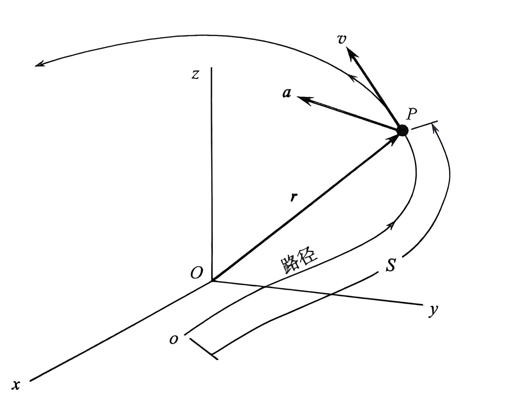
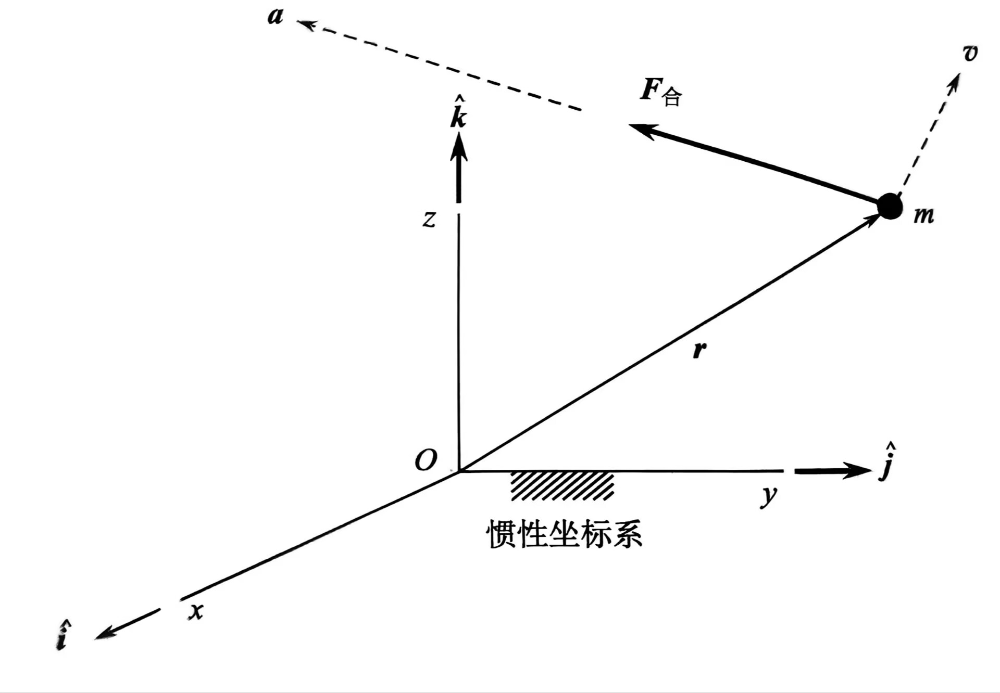
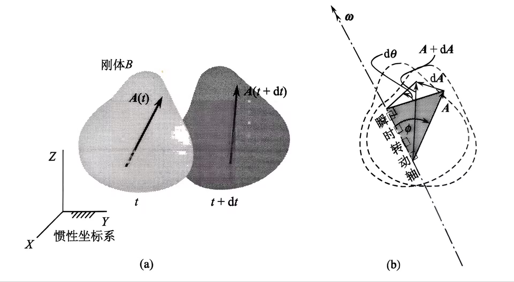

笔记基于 Howard D.Curtis (周建华 徐波 冯全胜) 的轨道力学书籍以及教师PPT整理而成。
运动学
- 全书时间单位使用 s
- 长度单位使用 m / km

给定义一个坐标系，质点P在时刻 t 的位置可以用位置矢量r(t)表示:
r(t)=x(t)i^+y(t)j^+z(t)k^
任何具有“ ^ ”的向量都是单位向量。
矢量的模：
∥r∥=r=x2+y2+z2
亦可通过点乘计算，r=r∙r,∥A∥=A∙A.
速度v:
v(t)=dtdx(t)i^+dtdy(t)j^+dtdz(t)k^=vx(t)i^+vy(t)j^+vzk^
加速度a:
a(t)=dtdvx(t)i^+dtdvy(t)j^+dtdvz(t)z^=ax(t)i^+ay(t)j^+az(t)k^
速率v:
v=vu˙t
其中u˙t为与轨迹相切的单位矢量。
距离s:
v=s˙
注意：某矢量导数的模不等于模的导数。
质量、力和万有引力定律
万有引力：
Fg=Gr2m1m2
这里的力只表示大小，两质量分别为m1和m2的中心距离为r的物体产生的万有引力。
这里的两物体距离要远大于物体直径，对于近距离不规则天体，如小行星着陆不能简单的视为质点。
重力：
W=Gr2Mm=m(r2GM)
或表示为：
W=mgg=r2GM
这里使用万有引力表示重力是基于壳层定理，对球对称物体适用。
还需要指出的是重力是万有引力和离心力的合力，但离心力很小就近似为万有引力。
牛顿运动定律
牛二可以表示为：
F合=ma
或者更严谨的表示为：
F合=dtdp
冲量：
I=∫t1t2Fdt
当速度较小，质量为一定值时：
I合=∫t1t2mdtdvdt=mv2−mv1
相对于o点的角动量:
Ho=r×mv
类似的对于力矩也有：
∫t1t2Mo合dt=Ho2−Ho1

运动矢量的时间导数
看到了前面关于标量导数的定义我们会好奇矢量的导数是什么。
注意：速度并不是dtdx,速度是对位置的分量（标量）分别求导然后再乘以单位矢量。
首先，假设物体只有平移没有旋转，根据矢量的平移不变性，此时矢量的导数是0。假设物体只有旋转没有平移，根据矢量的旋转不变性，此时矢量的导数还是0。直觉看来矢量的导数肯定和两者都有关。
这里的旋转是指自转，与绕空间某个轴旋转不同。

想象dt时间内物体绕瞬时旋转轴旋转，A变成了A+dA,这个dA就是我们要的矢量变化率。由图(b)可知:
dθ=∥ω∥dt
∥dA∥=dθ∥A∥=∥ω∥∥A∥dt
然后在瞬时时间内，我们可以认为dA垂直于 A和ω组成的平面，自然就有一阶导：
dtdA=ω×A
这里的A是任意的矢量，我们可以这样对位置、速度、角速度求导。
根据一阶导可以推出二阶导：
dtd2A=dtd(dtdA)=dtd(ω×A)=dtdω×A+dtdA×ω=α×A+ω×(ω×A)
还有三阶导:
dtd3A=dtdα×A+2α×(ω×A)+ω×(α×A+ω×(ω×A))
不同坐标系下矢量表示
惯性坐标系下XYZ单位矢量为I^、J^和K^，运动系xyz下单位矢量为i^、j^和k^.
对于任意时变矢量Q惯性坐标系下:
Q=QxI^+QyJ^+QzK^
I^、J^和K^是固定的，所以Q的导数为：
dtdQ=dtdQxI^+dtdQyJ^+dtdQzK^
因为dtdI^=0... , 所以如此。
Q在运动坐标系下：
Q=Qxi^+Qyj^+Qzk^
i^、j^和k^是不固定的，所以Q的导数为：
dtdQ=dtdQxi^+dtdQyj^+dtdQzk^+Qxdtdi^+Qydtdj^+Qzdtdk^
由我们刚推出的矢量导数可知：
dtdi^=Ω×i^
dtdQ=dtdQxi^+dtdQyj^+dtdQzk^+Ω×(Qxi^+Qyj^+Qzk^)=dtdQxi^+dtdQyj^+dtdQzk^+Ω×Q
Ω是运动坐标系角速度。
我们可以对比一下不同坐标系下的一阶导：
⎩⎨⎧dtdQ=dtdQxI^+dtdQyJ^+dtdQzK^dtdQ=dtdQxi^+dtdQyj^+dtdQzk^+Ω×Q
书上给dtdQxi^+dtdQyj^+dtdQzk^起了个名字，叫dtdQ)相对。
这样是便于表示了：
⎩⎨⎧dtdQ=dtdQxI^+dtdQyJ^+dtdQzK^dtdQ=dtdQ)相对+Ω×Q
我们不禁好奇运动坐标系下的二阶导是什么：
dt2d2Q=dtddtdQ)相对+dtdΩ×Q+Ω×dtdQ
因为dtdQ=dtdQ)相对+Ω×Q:
dt2d2Q=dtddtdQ)相对+dtdΩ×Q+Ω×[dtdQ)相对+Ω×Q]
第一项dtddtdQ)相对：
将dt2d2Qxi^+dt2d2Qyj^+dt2d2Qzk^表示为dt2d2Q)相对,上式可以简化为：
dtddtdQ)相对=dt2d2Q)相对+Ω×dtdQ)相对
最后带回二阶导上,合并同类项：
dt2d2Q=dt2d2Q)相对+Ω˙×Q+Ω×(Ω×Q)+2Ω×dtdQ)相对
相对运动
某一质点在惯性坐标系下绝对位置矢量为r,运动坐标系下的位置矢量为r相对,运动坐标系原点的绝对位置矢量为ro:
r=ro+r相对
r相对=xi^+yj^+zk^
绝对速度dtdr:
v=dtdr=vo+dtdr相对
绝对加速度：
a=ao+dt2d2r相对
将我们在上一节推导的公式对应起来：
⎩⎨⎧dtdr相对↔dtdQv相对=dtdr相对)相对↔dtdQ)相对dt2d2r相对↔dt2d2Qa相对=dt2d2r相对)相对↔dt2d2Q)相对
最后速度和加速度可以写为：
⎩⎨⎧v=vo+Ω×r相对+v相对a=ao+Ω˙×r相对+Ω×(Ω×r相对)+2Ω×v相对+a相对
这里的公式与前面的推导就多了vo和ao,这两个很好计算因为这两个是在惯性系下的，前面的推导没有是因为我们关注了运动系。
这几项还有名字：
⎩⎨⎧2Ω×v相对↔科里奥利加速度Ω×(Ω×r相对)↔向心加速度Ω˙×r相对↔欧拉项a相对↔相对加速度ao↔牵连加速度
在有时候使用的时候，比如考虑傅科摆加速度可以忽略 欧拉项（地球角加速度很小）、向心加速度（角速度平方也很小）还有牵连加速度ao也为0.
牵连加速度特指牵连平动加速度。